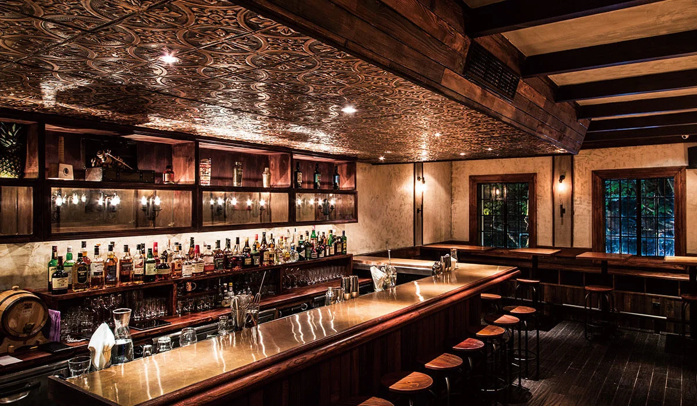
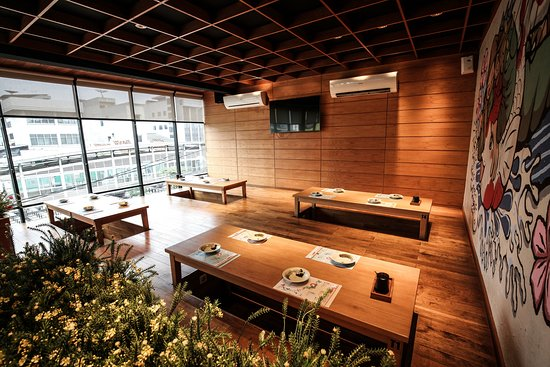
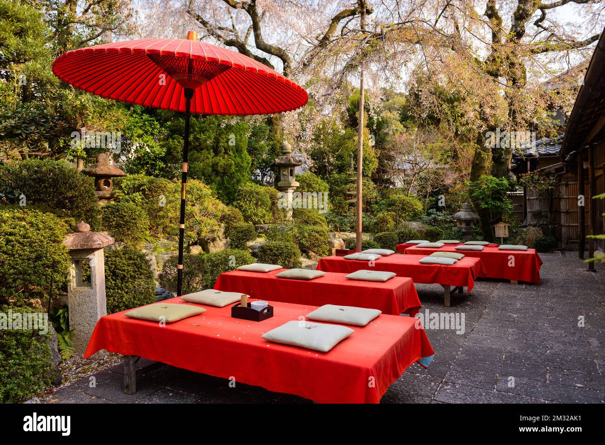

01
Tonkotsu Ramen
Kaldu tulang babi gurih kaya kolagen yang dipadu dengan mi kenyal dan irisan daging chashu lembut.
Ichiraku Ramen menyajikan mi buatan tangan dengan kuah kaldu kaya rasa yang direbus selama 12 jam, menghadirkan cita rasa otentik khas negeri sakura langsung ke mangkuk Anda.
Dibuat dari bahan-bahan pilihan berkualitas tinggi dengan resep turun-temurun yang menggugah selera.
Kaldu tulang babi gurih kaya kolagen yang dipadu dengan mi kenyal dan irisan daging chashu lembut.
Perpaduan pasta miso merah khas Jepang dengan minyak cabai rahasia untuk sensasi pedas yang menghangatkan.
Dilengkapi dengan telur marinasi (ajitsuke tamago) setengah matang dan gyoza panggang renyah di luar juicy di dalam.

Rasakan pengalaman makan langsung di depan koki melihat proses peracikan mangkuk ramen Anda.

Area tempat duduk bergaya tradisional Jepang yang nyaman untuk bersantap bersama keluarga.

Nikmati udara terbuka dengan suasana kedai yang santai, cocok untuk bersantai di sore atau malam hari.